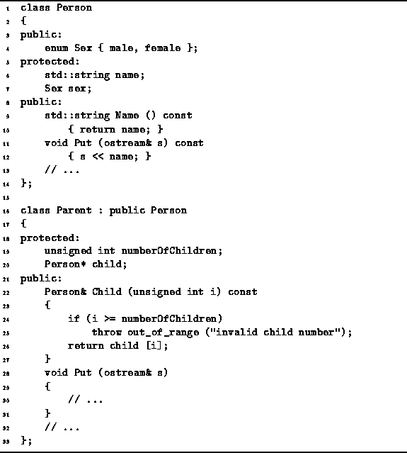

Data Structures and Algorithms
with Object-Oriented Design Patterns in C++
Data Structures and Algorithms
with Object-Oriented Design Patterns in C++This section reviews the concept of a derived class. Derived classes are an extremely useful feature of C++ because they allow the programmer to define new classes by extending existing classes. By using derived classes, the programmer can exploit the commonalities that exist among the classes in a program. Different classes can share values, operations, and interfaces.
Derivation is the definition of a new class by extending one or more existing classes. The new class is called the derived class and the existing classes from which it is derived are called the base classes . Usually there is only one base class. However, C++ allows there to be more than one base class (multiple inheritance ).
Consider the classes Person
and Parent defined in Program  .
Because parents are people too,
the Parent class is derived from the Person class.
.
Because parents are people too,
the Parent class is derived from the Person class.

Program: Derivation and Inheritance in C++
A derived class inherits all the members of all its base classes. I.e., the derived class contains all the member variables contained in the base classes and the derived class supports all the same operations provided by the base classes. E.g., consider the following variable declarations:
Person p; Parent q;Since p is a Person, it has the member variables name and sex and member function Name. Furthermore, since Parent is derived from Person, then the object q also has the member variables name and sex and member function Name.
A derived class can extends the base class(es) in several ways: New member variables can be defined, new member functions can be defined, and existing member functions can be overridden . E.g., the Parent class adds the member variables numberOfChildren and child and the member function Child.
If a function is defined in a derived class that has exactly the same signature (name and types of arguments) as a function in a base class, the function in the derived class overrides the one in the base class. E.g., the Put function in the Parent class overrides the Put function in the Person class. Therefore, p.Put(...) invokes Person::Put, whereas q.Put(...) invokes Parent::Put.
An instance of a derived class can be used anywhere in a program where an instance of the base class may be used. For example, this means that a Parent may be passed as an actual parameter to a function (either by value or by reference) in which the formal parameter is a Person.
It is also possible to assign the address of a derived class object to a pointer to a base class object like this:
Person* ptr = new Parent;However, having done so, it is not possible to call ptr->Child(...), because ptr is a pointer to a Person instance and a Person is not necessarily a Parent.
Similarly, we can use a reference to a Person to refer to a parent:
Person& p = *new Parent;For the same reasons as above, it is not possible to use the reference p to invoke p.Child(...).
 Copyright © 1997 by Bruno R. Preiss, P.Eng. All rights reserved.
Copyright © 1997 by Bruno R. Preiss, P.Eng. All rights reserved.